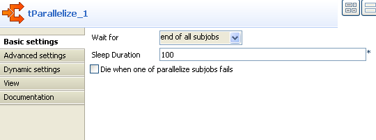
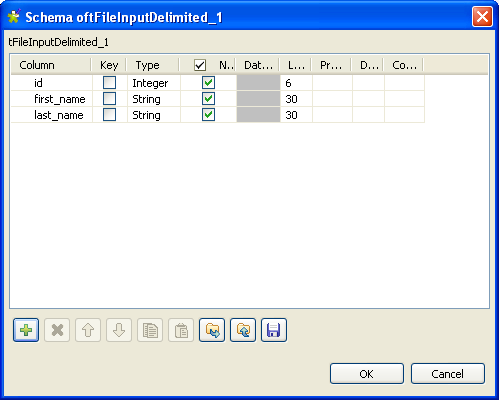
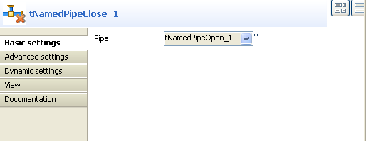

Famille de composant | File/Input | |
Fonction | Le composant tNamedPipeOutput écrit des données dans un tube nommé ouvert. | |
Objectif | Ce composant vous permet d’écrire des données dans un tube nommé ouvert déjà existant. | |
Basic settings | Use existing pipe connection | Cochez cette case afin d’utiliser un tube nommé existant dans la liste Pipe component, ou décochez cette case afin de spécifier un tube nommé dans le champ Pipe name. |
| Pipe component | Sélectionnez dans la liste un composant NamedPipe existant. NoteCette case est disponible uniquement lorsque vous cochez la case Use existing pipe connection. |
| Pipe name | Saisissez dans le champ le nom d’un tube nommé existant. NoteCette case s’affiche uniquement lorsque vous décochez la case Use existing pipe connection. |
| Row separator | Chaîne (ex : “\n” sous Unix) séparant les lignes dans le fichier de sortie. |
| Field separator | Caractère, chaîne ou expression régulière pour séparer les champs du fichier de sortie. |
| CSV options | Cochez cette case afin de prendre en compte tous les paramètres spécifiques aux fichiers CSV, en particulier les paramètres Escape char et Text enclosure. |
| Schema et Edit Schema |
Un schéma est une description de lignes, il définit le nombre de champs qui sont traités et passés au composant suivant. Le schéma peut être Built-in ou distant dans le Repository. Cliquez sur Edit Schema pour modifier le schéma. Notez que si vous modifiez le schéma, il devient automatiquement built-in. Cliquez sur Sync columns pour récupérer le schéma du composant précédent. |
|
| Built-in : Le schéma sera créé et conservé pour ce composant seulement. Voir également le Guide utilisateur de Talend Open Studio. |
|
| Repository : Le schéma existe déjà et est stocké dans le Repository. Ainsi, il peut être réutilisé dans divers projets et Jobs. Voir également le Guide utilisateur de Talend Open Studio. |
| Delete pipe if it exists | Cochez cette case si vous ne souhaitez pas dupliquer un tube nommé. Le tube nommé existant sera remplacé. |
Advanced settings | Boolean type | Sélectionnez un type de booléen dans la liste. |
| tStatCatcher Statistics | Cochez cette case pour collecter les données de log au niveau du Job, ainsi qu’au niveau de chaque composant. |
|
Dynamic settings |
Cliquez sur le bouton [+] pour ajouter une ligne à la table. Dans le champ Code, saisissez une variable de contexte afin de sélectionner dynamiquement votre connexion au tube nommé parmi celles prévues dans votre Job. La table Dynamic settings n'est disponible que si la case Use existing pipe connection est cochée dans la vue Basic settings. Lorsqu'un paramètre dynamique est configuré, la liste Pipe component devient inaccessible dans la vue Basic settings. Pour plus d'informations concernant les Dynamic settings et les variables de contexte, consultez le Guide utilisateur Talend Open Studio. | |
Utilisation | Ce composant est généralement utilisé connecté à un autre composant dans un sous-job lisant des données d’une source. | |
Le scénario suivant permet de créer un Job écrivant des données dans un tube nommé ouvert et affichant ces données dans la console.

Déposez les composants suivants de la Palette dans l’espace de modélisation graphique : tNamedPipeOpen, tParallelize, tNamedPipeClose, tFileInputDelimited, tSleep, tLogRow, tRowGenerator et tNamedPipeOutput.
Connectez le tNamedPipeOpen au tParallelize à l’aide d’un lien Trigger > OnSubjobOk.
Reliez le composant tParallelize au tFileInputDelimited à l’aide d’un lien Trigger > Parallelize.
Connectez le tParallelize au composant tSleep à l’aide d’un lien Trigger > Parallelize.
Reliez le tFileInputDelimited au tLogRow à l’aide d’un lien Row > Main.
Connectez le composant tParallelize au tNamedPipeClose à l’aide d’un lien Trigger > Synchronize (Wait for all).
Reliez le tSleep au composant tRowGenerator à l’aide d’un lien Trigger > OnComponentOk.
Connectez le tRowGenerator au tNamedPipeOutput à l’aide d’un lien Row > Main.
Double-cliquez sur le composant tNamedPipeOpen afin d’ouvrir sa vue Basic settings.
Dans le champ Name, saisissez le nom d’un tube nommé et sélectionnez Delete if already exist afin de ne pas dupliquer ce tube nommé.

Double-cliquez sur le tParallelize afin d’afficher sa vue Basic settings.
Sélectionnez end of all subjobs dans la liste Wait for.
Dans le champ Sleep Duration, saisissez 100 pour configurer la durée de pause.
Double-cliquez sur le tFileInputDelimited afin d’afficher sa vue Basic settings.
Dans le champ File name/Stream, saisissez l’expression suivante pour utiliser le nom du tube nommé existant défini dans la vue Basic settings du tNamedPipeOpen :
((String)globalMap.get("tNamedPipeOpen_1_PIPE_NATIVE_NAME"))
Cliquez sur le bouton [...] à côté du champ Edit schema.
Cliquez sur le bouton [+] pour ajouter trois colonnes au tFileInputDelimited. Renommez-les id, first_name et last_name puis configurez le Type de la colonne id à Integer. Laissez les autres paramètres tels qu’ils sont.
Cliquez sur OK afin de sauvegarder le schéma.
Laissez les autres paramètres de la vue Basic settings tels qu’ils sont.
Double-cliquez sur le tSleep et saisissez 1 dans le champ Pause (in seconds).
Double-cliquez sur le tRowGenerator pour afficher sa vue Basic settings.
Cliquez sur RowGenerator Editor pour configurer le schéma.
Cliquez sur le bouton [+] pour ajouter trois colonnes au tRowGenerator. Renommez ces trois colonnes respectivement id, first_name et last_name puis configurez le Type de la colonne id à Integer. Laissez les autres types tels qu’ils sont par défaut.

Sélectionnez sequence dans la liste Functions pour la colonne id.
Sélectionnez getFirstName dans la liste Functions pour la colonne first_name.
Sélectionnez TalendDataGenerator.getLastName dans la liste Functions pour la colonne last_name.
Sélectionnez id, saisissez s1 dans le champ Value sous l’onglet Function parameters pour sequence identifier, 1001 pour start value et 1 pour step.
Cliquez sur OK pour sauvegarder les modifications.
Double-cliquez sur le composant tNamedPipeOutput pour afficher sa vue Basic settings.
Cochez la case Use existing pipe connection et sélectionnez tNamedPipeOpen_1 dans la liste Pipe component.
Cochez la case Delete pipe if it exists pour ne pas dupliquer le tube nommé.
Cliquez sur Sync columns pour récupérer le schéma du composant précédent.
Laissez les autres paramètres tels qu’ils sont.

Double-cliquez sur le tLogRow pour afficher sa Basic settings.

Cliquez sur Sync columns pour récupérer le schéma du composant précédent.
Dans la zone Mode, sélectionnez Table.
Double-cliquez sur le tNamedPipeClose afin d’afficher sa vue Basic settings.
Sélectionnez le composant tNamedPipeOpen_1 dans la liste Pipe.